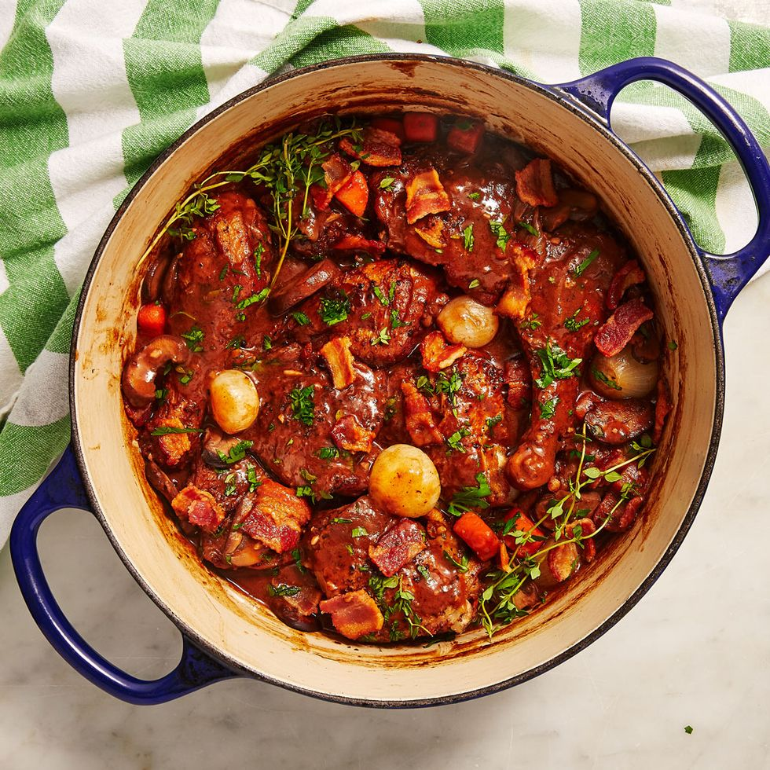

Coq au Vin

Ingredients
- 4 chicken thighs
- 4 chicken drumsticks
- 1.5 cups red wine
- 3 strips of bacon
- 1 onion
- 4 carrots
- 4 garlic cloves
- 2 tablespoons tomato paste
- Thyme
- 8 ounces mushrooms
- 8 ounces pearl onions
Steps
- Place the chicken thighs and drumsticks in a medium-sized bowl and pour the wine, chicken stock over the top. Prep the vegetables.
- Add the bacon to a large skillet or braiser over medium-high heat. Cook until the bacon is crispy, about 8 minutes, then remove it from the pan with a slotted spoon.
- Remove the chicken from the wine marinade (save the wine) and dry the chicken with paper towels. Working in 2 batches if needed, place the chicken in the pan, skin side down.
Sear until it is golden on both sides (about 5 minutes each side) then remove the chicken from the pan. Pour all but 2 tablespoons of the bacon/chicken oil into a heatproof
dish and set it aside.
- Add the sliced onion and carrots to the pan and let them cook until the onion is golden brown, about 7-8 minutes. Add the garlic to the pan and let it cook for 1 minute.
- Push the vegetables to the side of the pan and add the tomato paste. Cook the tomato paste until it is fragrant and begins to darken. Pour the reserved wine marinade into the pan,
scraping the bottom to remove any stuck on bits.
- Nestle the chicken into the pan and sprinkle the thyme over top. Cover the pot, turn the heat to low, and simmer for 20 minutes.
- Pour 1 tablespoon of the reserved oil (or use olive oil) into a large skillet. Add the mushrooms and saute over medium-high heat until brown, about 10 minutes.
- Add the pearl onions to the pot with the chicken and cook for 10 minutes more.
- In a small bowl mix together your choice of beurre manie. Remove the chicken from the pan then add the beurre manie. Stir it into the sauce and let it thicken.
Season to taste with salt and pepper.
- Add the chicken back into the pan and top with the cooked bacon and mushrooms. Sprinkle with a little fresh thyme.
Home